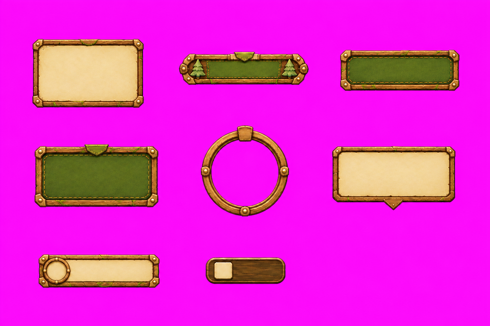
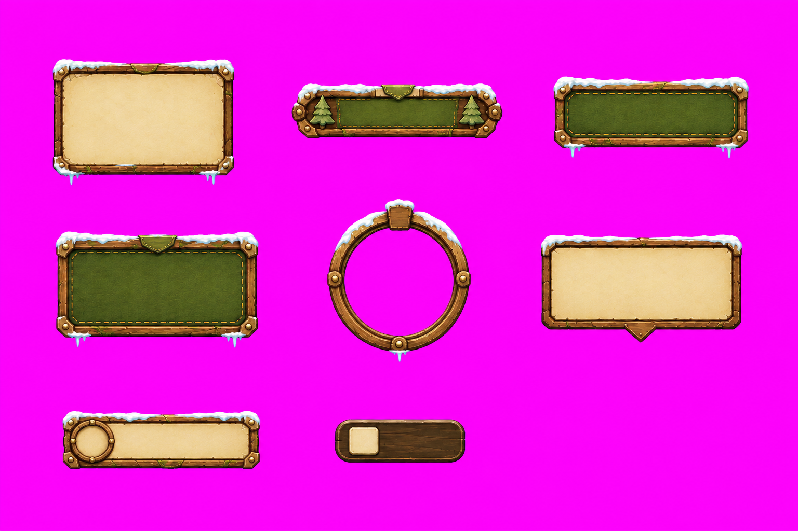

Normal fields use the plain wood and felt panels. Snowy fields use the matching snow caps and icicles. This is an art-switch preview; the game still needs biome-driven switching and final crop alignment.


Both sheets are 1536 × 1024. Magenta is the source-sheet background; generated color variations still require cleanup before strict color-key extraction.